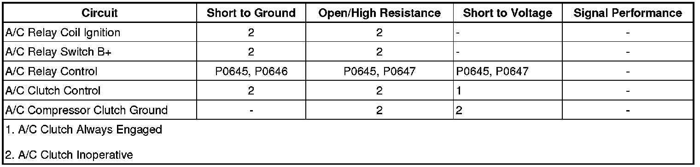

P0647
DTC P0645, P0646, or P0647
Diagnostic Instructions
* Perform the Diagnostic System Check - Vehicle (Initial Inspection and Diagnostic Overview) prior to using this diagnostic procedure.
* Review Strategy Based Diagnosis (Initial Inspection and Diagnostic Overview) for an overview of the diagnostic approach.
* Diagnostic Procedure Instructions (Initial Inspection and Diagnostic Overview) provides an overview of each diagnostic category.
DTC Descriptors
DTC P0645
- Air Conditioning (A/C) Clutch Relay Control Circuit
DTC P0646
- Air Conditioning (A/C) Clutch Relay Control Circuit Low Voltage
DTC P0647
- Air Conditioning (A/C) Clutch Relay Control Circuit High Voltage
Diagnostic Fault Information

Circuit/System Description
Ignition voltage is supplied directly to the air conditioning (A/C) compressor clutch relay. The powertrain control module (PCM) controls the relay by grounding the A/C clutch relay control circuit via an internal solid state device called a driver. The primary function of the driver is to supply the ground for the component being controlled. The driver has a fault line which is monitored by the PCM. When the PCM is commanding a component ON, the voltage of the control circuit should be near 0 volts. When the PCM is commanding the control circuit to a component OFF, the voltage potential of the circuit should be near battery voltage.
Conditions for Running the DTC
* The ignition voltage is between 9 and 18 volts.
* The engine speed is more than 80 RPM.
* The PCM A/C Compressor Clutch Relay Control transitions between ON to OFF or from OFF to ON.
Conditions for Setting the DTC
* A short to ground on the A/C compressor clutch relay control circuit.
* A short to voltage on the A/C compressor clutch relay control circuit.
* An open circuit on the A/C compressor clutch relay control circuit or relay.
* An internally shorted or excessively low resistance A/C clutch relay coil.
Action Taken When the DTC Sets
* The A/C clutch relay is commanded OFF.
* The conditions for which the DTC was set will be stored in the Failure Records data only. No information will be stored as Freeze Frame data.
Conditions for Clearing the DTC
The history DTC will clear after 40 fault-free ignition cycles.
Diagnostic Aids
A malfunction within the refrigerant system causing high pressure can cause this DTC to set.
Reference Information
Schematic Reference
HVAC Schematics (Electrical Diagrams)
Connector End View Reference
Component Connector End Views (Connector Views)
Description and Operation
Automatic HVAC Description and Operation (Automatic HVAC Description and Operation (Part 1))
Electrical Information Reference
* Circuit Testing (Component Tests and General Diagnostics)
* Connector Repairs (Component Tests and General Diagnostics)
* Testing for Intermittent Conditions and Poor Connections (Component Tests and General Diagnostics)
* Wiring Repairs (Component Tests and General Diagnostics)
Scan Tool Reference
Control Module References (Programming and Relearning) for Scan Tool Information
Circuit/System Testing
1. Ignition OFF, disconnect the A/C COMP relay.
2. Ignition ON, verify that a test lamp does not illuminate between the relay coil control circuit terminal G7 and ground.
• If the test lamp illuminates, test the control circuit for a short to voltage.
3. Verify that a test lamp illuminates between the relay coil ignition circuit terminal E8 and ground.
• If the test lamp does not illuminate, test the ignition circuit for a short to ground or an open/high resistance. If the circuit tests normal and ignition circuit fuse is open, test or replace the relay.
4. Connect a test lamp between the relay coil ignition circuit terminal E8 and the relay coil control circuit terminal G7.
5. Command the A/C relay ON and OFF with a scan tool. The test lamp should turn ON and OFF when changing between the commanded states.
• If the test lamp is always ON, test the control circuit for a short to ground. If the circuit tests normal, replace the PCM.
• If the test lamp is always OFF, test the control circuit for a short to voltage, or an open/high resistance. If the circuit tests normal, replace the PCM.
6. If all circuits test normal, test or replace the A/C COMP relay.
Component Testing
1. Ignition OFF, disconnect the A/C COMP relay.
2. Test for 60-180 ohms of resistance between terminals 85 and 86.
• If the resistance is not within the specified range, replace the relay.
3. Test for infinite resistance between the following terminals:
* 30 and 86
* 30 and 87
* 30 and 85
* 85 and 87
• If not the specified value, replace the relay.
4. Install a 30-amp fused jumper wire between relay terminal 85 and 12 volts. Install a jumper wire between relay terminal 86 and ground. Test for less than 2 ohms of resistance between terminals 30 and 87.
• If greater than the specified range, replace the relay.
Repair Instructions
Perform the Diagnostic Repair Verification (Verification Tests) after completing the diagnostic procedure.
Control Module References (Programming and Relearning) for PCM setup, replacement, and programming